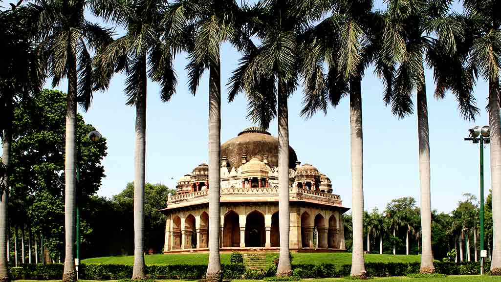
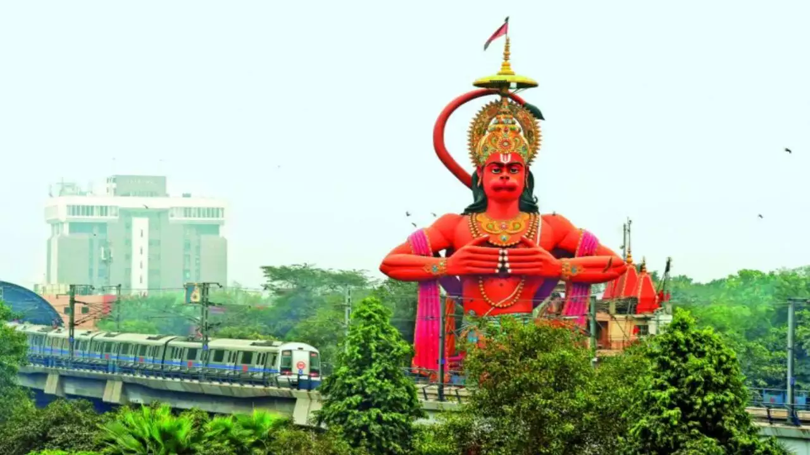

1.India Gate
9 feb 2023(By Himanshi)
Timing: 9.30 am-5 pm (Sat-Sun)
India Gate, official name Delhi Memorial, originally called All-India War Memorial, monumental sandstone arch in New Delhi, dedicated to the troops of British India who died in wars fought between 1914 and 1919. India Gate, which is located at the eastern end of the Rajpath (formerly called the Kingsway), is about 138 feet (42 metres) in height. India Gate India Gate India Gate is one of many British monuments built by order of the Imperial War Graves Commission (later renamed Commonwealth War Graves Commission).
Timings & Season
You can visit India Gate anytime. There are no restrictions. No fee is charged. I love going to India Gate, sit in the lawns and read a book or just relax. In winters, during December / January months when Delhi is cold to extremes, you will love sitting in the lawns and enjoy Sun. In summer months evenings and night hours are best. India Gate is busiest picnic spot in Delhi during weekends. Schools from Delhi and NCR Region often take children for picnic to India Gate. Also schools and educational institutions from other parts of India and overseas make trip to India Gate every year.
Travel Tips
India Gate is a picnic hotspot throughout the year. To me this place is truly healing. You can visit here during anytime of the day or night and in any weather. If you are someone who wishes to give time to yourself, go India gate, pay tribute to brave hearts and meditate in the lush green lawns. Small Children playing in the lawns of India Gate are bound to win appreciation from visitors. Do you have those tiny creatures in your house? Please take them along. They will love playing in the open space. You can reach to India Gate through all means of transport i.e. City Bus, Taxi, Personal Car, Bike, Auto Rickshaw or Metro Rail. For visitors coming in personal vehicles parking facility is available. Nearest Metro Station to India Gate is Pragati Maidan. From here either you can walk or take a bus ride, taxi or auto rickshaw to reach to India Gate.

2.Jantar Mantar – World’s Largest Sundial
14 feb 2023(By Komal)
Timing: 12.30 am-5 pm (Sat-Sun)
Jantar Mantar is located in the modern city of New Delhi. “Jantar Mantar” it means “instruments for measuring the harmony of the heavens”.[1] It consists of 13 architectural astronomy instruments. The site is one of five built by Maharaja Jai Singh II of Jaipur, from 1723 onwards, revising the calendar and astronomical tables. Jai Singh, born in 1688 into a royal Rajput family that ruled the regional kingdom, was born into an era of education that maintained a keen interest in astronomy. There is a plaque fixed on one of the structures in the Jantar Mantar observatory in New Delhi that was placed there in 1910 mistakenly dating the construction of the complex to the year 1710. Later research, though, suggests 1724 as the actual year of construction. Its height is 723 feet (220 m). The primary purpose of the observatory was to compile astronomical tables, and to predict the times and movements of the sun, moon and planets. Some of these purposes nowadays would be classified as astronomy.
Major Attractions Within Jantar Mantar
The Jantar Mantar observatory in Jaipur comprises of 19 instruments to measure the position and distances of extraterrestrial bodies. These instruments are basically stone structures, depicting interesting geometric shapes. It is advisable to take a local Jantar Mantar, Jaipur guide or an audio guide for a clear understanding of the instruments and how they work.

3.Lodhi Garden
22 feb 2023(By Ram)
Timing: 11.30 am-4 pm (Mon-Sun)
Lodi Gardens is a city park situated in New Delhi, India. Spread over 90 acres (360,000 m2),[1] it contains Mohammed Shah's Tomb, the Tomb of Sikandar Lodi, the Shisha Gumbad and the Bara Gumbad,[2] architectural works of the 15th century by Lodis - who ruled parts of northern India and Punjab and Khyber Pakhtunkhwa province of modern-day Pakistan, from 1451 to 1526. The site is now protected by the Archaeological Survey of India (ASI).[1] Lodi Gardens is popular for exercise and walking enthusiasts The gardens are situated between Khan Market and Safdarjung's Tomb on Lodi Road and is a popular spot for morning walks for the Delhites.
Lodhi Gardens Architecture
Lodhi Gardens cover an area of over 90 acres and houses many 15th-century structures that display spectacular architectural beauty. The mausoleum of Mohammed Shah features Islamic and Hindu architectural styles. Designed with eight small domed structures or chattris, each adorned with a lotus finial, ornate pinnacles at the corners, a huge central dome, and an octagonal chamber, the tomb is a sight to behold.
Things to See in Lodhi Gardens
Lodi Gardens in Delhi is an awesome place to spend some time in a historical setting. Once you are done exploring the attractions within the park, head out to the nearby Khan Market and shop to your heart’s content. The Lodi- the Garden Restaurant, situated near Gate No. 1 is an added attraction where you can enjoy a sumptuous alfresco dinner

4.hanuman mandir
2 March 2023(By Manish)
Timing: 10.30 am-5 pm (Mon-Sun)
Hanuman Temple in Connaught Place, New Delhi, India, is an ancient Hindu temple and is claimed to be one of the five temples of Mahabharata days in Delhi. The other four temples are the Kalkaji, a Kali temple in South Delhi containing Swayambu (Sanskrit: "self manifest") rock Idol, the Yogmaya Temple near Qutub Minar, the Bhairav temple near the Purana Qila and the Nili Chatri Mahadev (Shiva temple) at Nigambodh Ghat outside the walls of Old Delhi.[2][3][4] The temple, which has a self manifest idol of Hanuman, has an unusual feature fixed in the spire (Shikhara) in the form of a crescent moon instead of the Hindu symbol of Aum or Sun that is commonly seen in most Hindu temples. This became particularly important during the Mughal period corroborating this extraordinary depiction.[2] The idol in the temple, devotionally worshipped as "Sri Hanuman Ji Maharaj" (Great Lord Hanuman), is that of Bala Hanuman namely, Hanuman as a child.